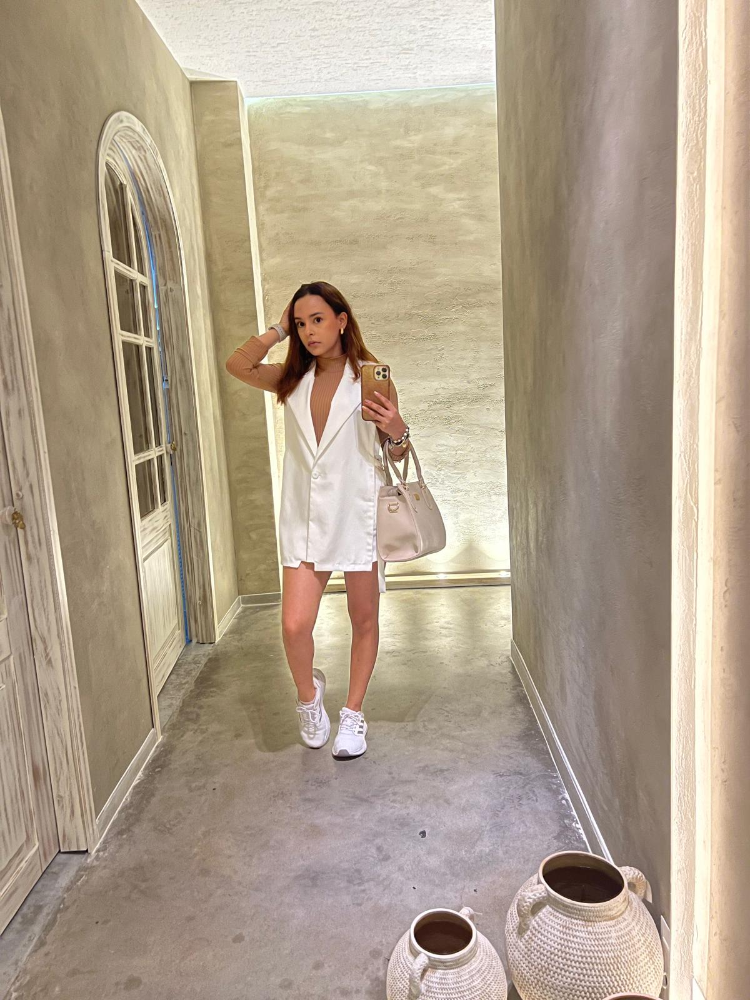

Welcome
I am Isabela Piedrahita Russi. My academic journey began at the De la Salle Pereira Bilingual School in Colombia. I then pursued my undergraduate studies in Business Administration at Universidad Libre Pereira, Colombia. Currently, I am completing my Bachelor of Science in Business Administration at Northwestern State University, United States, where I am pursuing a Major in Business Administration, a Minor in Computer Information Systems, and a concentration in Management.
My principal career interests lie in the management area of a technology company. This is why my profile provides a perfect complement between Computer Information Science, Business Administration, and Management. My personal goal is to become the CEO of a technology company; I am fascinated by how technology improves our lives, acting as more than just a tool, but as a driver for individual productivity and human potential.
Professional Experience
- General Project Management, Superjuegos Casinos, Colombia (2025–Present)
- Resident Assistant, Campus Living Villages, Northwestern State University (2025–Present)
- Facility Worker, Wellness, Recreation and Activity Center, Northwestern State University (2025–Present)
You can view the LinkedIn homepage here.
Projects
Examples of academic and professional projects completed during my studies in Business Administration and Computer Information Systems.
CSS Showcase
Demonstrations of CSS techniques learned in this course.
1a. Text — Shadow
Isabela P. Russi
1b. Text — Glow
Technology & Business
1c. Text — Letter Spacing
Leadership
1d. Text — Color Gradient
Innovation